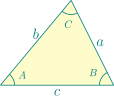
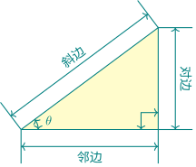
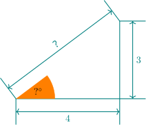
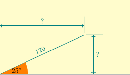
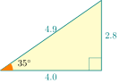
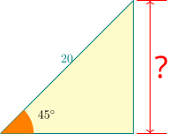
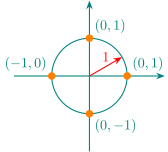
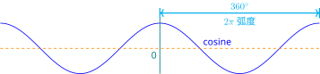
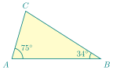

三角函数简介
三角函数的英文单词是 Trigonometry，源自希腊语 trigonon（三角形）+ metron（测量）

三角函数……讲的就是三角形。
它能帮助我们计算角度和距离，在科学、工程、电子游戏等领域应用广泛！
直角三角形
最受关注的是直角三角形。右下角的小方框表示一个直角：

另一个角通常用符号 \(\theta\) 表示，三条边分别称为：
- 邻边(Adjacent)：紧挨着角 \(\theta\)
- 对边(Opposite)：正对着角 \(\theta\)
- 斜边(Hypotenuse)：最长的一条边
为什么选择直角三角形？
这个三角形为什么这么重要？
假设我们可以左右移动或上下移动，但想知道两点之间的直线距离和角度：

三角函数能帮我们找到缺失的角度和距离。
或者已知距离和角度，需要确定邻边和对边的位置：

这类问题在工程和电脑动画中很常见。而三角函数正是解答这些问题的工具！
正弦、余弦和正切
三角函数中最主要的三个函数是：正弦、余弦和正切。
其实就是直角三角形中一条边除以另一条边的结果。
对于任意角 "θ"：
正弦、余弦、正切通常简写为 \(\sin\)、\(\cos\) 和 \(\tan\)。
使用这个三角形（长度保留一位小数）：

三角形可以更大、更小或旋转，但只要角度相同，比例就不会变。
计算器上有 \(\sin\)、\(\cos\) 和 \(\tan\) 键，我们来看怎么用它们：
我们够不到树顶，但可以走远一些，用量角器测角度，用激光测距离：
- 已知 斜边
- 想知道 对边

正弦 是 对边 / 斜边 的比值：
拿出计算器，输入“45”，然后按 “sin”：
这个数字代表的是边长的比例。也就是说，对边大约是斜边长度的 \(0.7071 \)倍。
可以把 \(0.7071\) 替代 \(\sin(45^\circ)\) 写入公式：
又知道斜边是 \(20\)：
两边同时乘以 \(20\)：
最后得出：
等你熟练之后，就可以更快地完成这些步骤：
单位圆
单位圆是以原点为中心、半径为 1 的圆。
因为半径是 1，可以直接测量出正弦、余弦和正切的值。

角度与弧度
角度可以用“度”也可以用“弧度”来表示。以下是一些例子：
| 角度 | 度数 | 弧度 |
|---|---|---|
| 直角 | 90° | π/2 |
| 平角 | 180° | π |
| 一周角 | 360° | 2π |
周期性变化
由于角是绕着圆不断旋转的，因此正弦、余弦和正切函数在每次完整旋转后都会重复一次。

计算一个大于 \(360^\circ\)（即 2π 弧度）的角对应的函数值时，可以减去若干个完整的旋转角度，使其小于 \(360^\circ\)：
\(370^\circ\) 大于 \(360^\circ\)，先减去 \(360^\circ\)：
如果角度小于 \(0\)，那就加上完整的旋转角度。
\(−3\) 小于 \(0\)，我们加上 \(2\pi\) 弧度：
解三角形
三角函数不仅适用于直角三角形，也适用于其他类型的三角形。可以用来解三角形，也就是找出未知的边或角。
根据“三角形内角和为 \(180^\circ\)°”的规则，可得：

其他函数（余切、正割、余割）
除了正弦、余弦和正切外，还有三种三角函数，也是通过边与边的比值得到的：
| 余割函数： | $ \csc(\theta) = \frac{\text{斜边}}{\text{对边}} $ |
|---|---|
| 正割函数： | $ \sec(\theta) = \frac{\text{斜边}}{\text{邻边}} $ |
| 余切函数： | $ \cot(\theta) = \frac{\text{邻边}}{\text{对边}} $ |